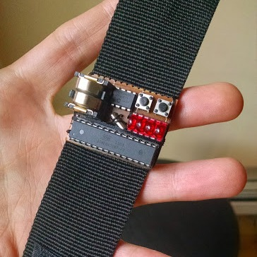
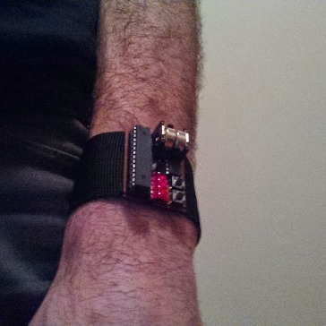
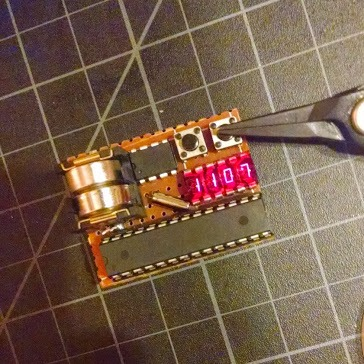
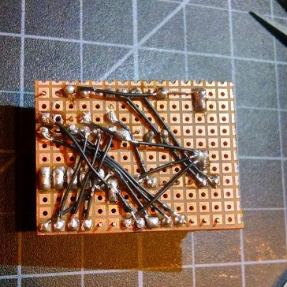

LED Wrist Watch

August 2014
- Small! 4x3 cm
- ATmega328 microcontroller
- Two (2) LR44 batteries
- HP QDSP-6064 LED bubble display
- Microchip MCP7940M RTC
- Program time mode



Limitations
- To save battery life, time is displayed only when button is pressed down
- Display is not bright enough to be viewable in sunlight